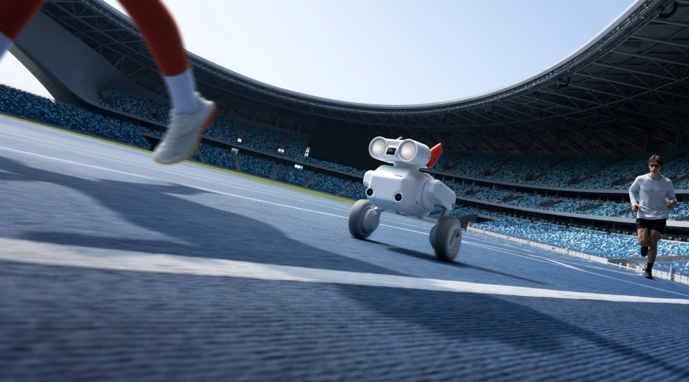

从众筹设备到可下单套装
妙动的Beni在十一月十日宣布进入现货销售，国内报道列标准套装四千九百九十九元、探索套装五千七百九十九元。此次变化是购买与交付阶段，不是把七月众筹再包装为首次发布。官方全球商店在采集时显示有货及三至七个工作日预计送达，但页面其他位置仍写十一月交付，具体地区要以结算和客服确认为准；本文没有下单验证。它面向想自己出现在家庭、宠物和运动画面中的人，减少找同伴举相机的需求，不过机器跟着走与获得可用镜头仍是两件事。
Beni camera robot · 软硬结合／消费产品可用性

妙动的Beni在十一月十日宣布进入现货销售，国内报道列标准套装四千九百九十九元、探索套装五千七百九十九元。此次变化是购买与交付阶段，不是把七月众筹再包装为首次发布。官方全球商店在采集时显示有货及三至七个工作日预计送达，但页面其他位置仍写十一月交付，具体地区要以结算和客服确认为准；本文没有下单验证。它面向想自己出现在家庭、宠物和运动画面中的人，减少找同伴举相机的需求，不过机器跟着走与获得可用镜头仍是两件事。
使用链从App连接和设备激活开始，再选择跟随方式、相机参数并开始录制。官方说明跟随对象主要是人和狗，提供后方、侧面和环绕等机位；手机可看画面，随附体感追踪器可手动引导，素材下载后还能选择片段交给MondoCut成片。对用户来说，目标选择、相机朝向和轮子走向需要相互配合，不能只凭画面里识别到人就假定路线安全。一个值得观察的细节是目标暂时被遮挡后，界面能否清楚表达跟随暂停、重新锁定或需要接管，避免人离开镜头却没有注意到录制已经失去意义。
产品页列机械与电子结合的防抖、机载拍摄与追踪，以及避障和跌倒恢复能力，这些都是厂商功能说明，本文没有复现。支持页明确设备不防水，须避免雨水和积水；标准轮面向平整地面，越野轮适合草地。选择路线时，这些限制比宣传中的最高速度更接近实际使用条件。低机位容易让宠物和运动画面有临场感，但在人流密集处也增加绕行和看护责任。拍摄前先在小范围确认转向、停下及重新跟随，能把取景问题与地面通过性问题分别看清，而不是用一段成功演示替代整个场景判断。
自动剪辑的输入仍是用户挑出的片段，成片后也要检查是否保留了关键动作，不能把一键生成等同于无需看素材。配件、轮胎、电池和日常清洁使它更像一套可移动拍摄工具，而不是随手打开的手机功能。官方所说机载拍摄追踪，只覆盖这两个环节，不能外推App、账号、素材传输和剪辑都不经过网络。公开材料没有给出本文可验证的长期维护成本或跟拍失败率。购买判断宜从经常拍什么、在哪里拍和谁负责收回设备出发；若只是偶尔静态合影，新增的搬运和看护负担未必值得。